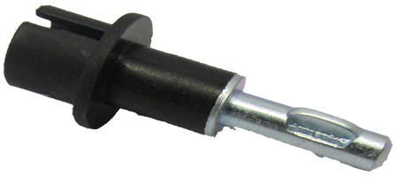

Products
Precitek is a full service supplier with over five years of experience and satisfied customers all over India Our adherence to latest manufacturing principles, the utilisation of the most appropriate technology and/or supplier for each component, provides our customers with consistently “World Class” manufacturing solutions. Each order is carried out exactly to your specifications, or if required, with as much technical input from Precitek as you require. With rapid delivery to all global locations, at high value pricing and local technical support, we are sure that Precitek will be considered as a valuable member of your supply chain.